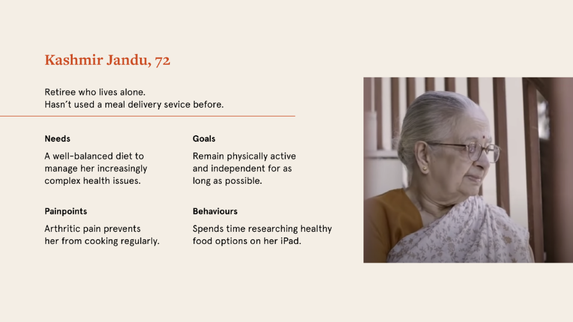
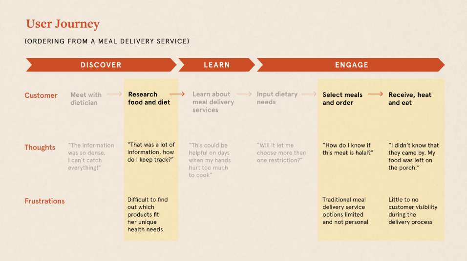
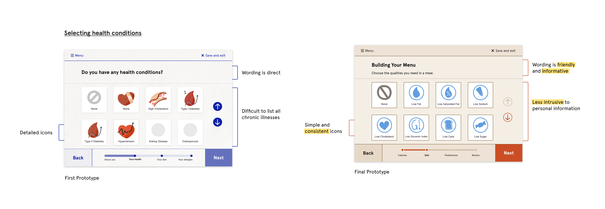
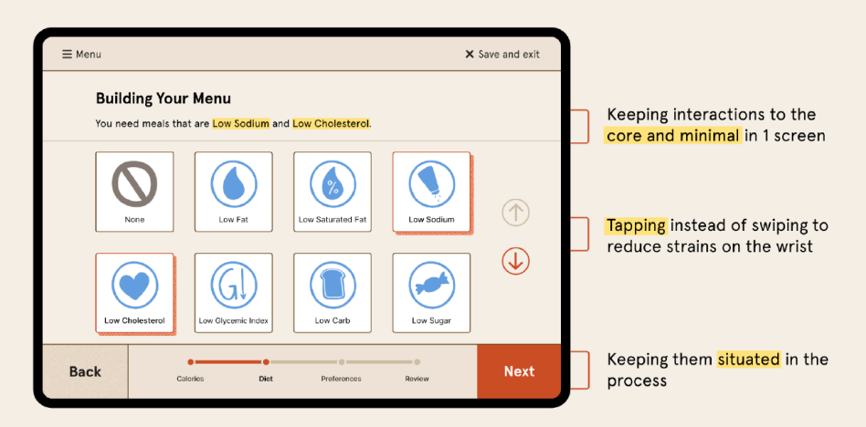

Making healthy meal options more accessible for seniors with chronic illnesses.
ROLE
Research
Ideation
UX/UI Design
Video editing
TEAM
Shiny Chu
Sabrina He
April Diaz
Hanah Lim
DURATION
7 weeks
TOOLS
Figma
After Effects
Premiere Pro
Design Overview
*WARNING: Mentioning of chronic illnesses*
Made with Love is a new digital service for IGA that centers around accessible meal delivery for aging seniors with chronic illnesses. With a personalized and tailored menu, Made with Love offers long term dietary solutions to aging seniors.
Framing the Problem
The Independent Grocer Alliance (IGA) are family owned grocery stores that offer a tailored and local shopping experience. With a focus of providing for their local communities through brick and mortar stores, IGA is falling behind in digital sales in a growing competitive market.
Rather than strengthening their online shopping experience, we focused on designing for future senior customers as IGA risks losing this customer segment when they can no longer shop or cook for themselves. We asked ourselves how might we make healthy meal options more accessible for senior IGA shoppers?
Seniors in the United States
To better understand the current issues faced by seniors today, we conducted secondary research and discovered that the United States is one of only two developed countries in the world without a social insurance program for long-term care. As the eldery population continues to grow in the U.S., they will need more support in their day to day activities.
Key Takeaways
By 2030, 1 out of every 5 U.S. citizens will be of retirement age.
43% of the elderly in the U.S. are considered “high-need”.
Approximately 80% of older adults have at least one chronic illnesses, and 77% have at least two.
Malnutrition is a barrier to treating chronic illnesses.
Speculating Future Senior Needs
Through further secondary research, we found 4 key characteristics of future seniors. Based on our findings, we focused on IGA’s operations in the U.S. as we saw an opportunity to better equip IGA to become a leader in meeting seniors’ nutritional needs by positively impacting elderly customers’ quality of life.
4 Characteristics of Seniors
1. Quality of life
Seniors value their independence and ability to stay at home during their retirement years.
2. Digital intervention
Gen X’s have learned to adopt technology in everyday life.
3. Simplification
Future seniors desire to simplify their lives in their retirement years.
4. Living alone
More seniors (65+) will be living alone during their retirement
Design Sprint
To explore how we can make healthy meal options more accessible to seniors IGA shoppers, I co-led a 5 day virtual design sprint which involved problem framing, understanding and defining our project goals, brainstorming, prototyping, and testing our intervention. Through the design sprint, we discovered that seniors use delivery services for their convenience. This led us to explore and identify gaps in the current meal delivery services.
Persona and Journey Map
Synthesizing our insights, we developed our persona, Kashmir, a single retiree that was recently diagnosed with heart disease. She struggles to find healthy food options that are suitable for her needs and her arthritic pain prevents her from cooking.

The needs and goals of our demographic synthesized into a persona.
Our persona informed our user journey map, where we identified two key areas to address and changed the questions we asked ourselves.
Key Areas to Address
Difficulty in finding food suitable for one’s unique health needs
Lack of personalization options in delivery services
Revised How Might We's
How might we make meal delivery feel personalized for our senior audience in order to revive the joy of eating a home-cooked meal?
How might we make meal options more accessible for seniors in order to help them regain a sense of independence?

The user journey of a traditional meal delivery service.
Prototyping and Refinement
In order to curate a menu based on the senior’s unique health needs, our first prototype asked for their health conditions and food preferences. Through user tests, we found that the preferences were well received by the seniors, but some chronic illnesses were missing.
Taking these findings, we asked ourselves how can we cover a range of chronic illnesses without overloading the seniors? Through interviews with dietitians and more secondary research, we found that seniors know what food to adopt and avoid. For the revised prototype, we focused the questions to ask about the types of diet they should follow instead of the type of conditions they have. This allowed us to cover a wide range of chronic illnesses, while keeping their health conditions confidential.

First prototype of Made with Love compared to second prototype.
Accessibility Considerations
In our first iteration, I worked with two teammates to create low fidelity wireframes. To better understand how to design for this demographic, I looked at best practices around accessibility and synthesized my findings into a document, which helped inform our design decisions.
Key considerations
Made with Love was designed for tablets as it is the most used device for seniors.
Interactions on each screen were kept to a minimum to reduce cognitive overload.
To reduce strains on the wrist, arrows were added as an option to assist with scrolling.
A progress bar is used to keep the seniors situated in the process.

Accessibility considerations of the Made with Love UI
Features
Calorie Intake
The onboarding of the app includes an optional step where personal questions are asked to determine a calorie range for the recommended meal options. Seniors in our user tests mentioned the importance of counting calories.
Long-term meal planning
Unlike traditional meal delivery services, Made with Love focuses on long-term meal plans as seniors need this continued support to manage their health concerns.
Reordering
The app sends a friendly and personalized reminder for the senior to reorder their meals. The senior can quickly order by editing one of their past meals. Their recommended meals will be based on their ordering habits.
Moments of Joy
UI is focused on being simple and functional. Introduce a more vibrant colour palette for the illustrations to bring out the joyfulness. Micro-animations placed throughout the app for a feeling of accomplishment and reward
The Solution
To explain how seniors would navigate through the app, I created a video which showcases our design and prototype.
Prototype walkthrough video
Reflection
This project allowed me to better empathize for the person I am designing for, to be speculative by observing trends and making inferences about the future and anticipating, and projecting it into future needs. It also allowed me to look beyond the industry and identify gaps.
Furthermore, as this is my first remote course, this experience has taught me that being transparent is important in allowing me to better empathize with my teammates and support them and this leads to more trust and efficient collaborations.